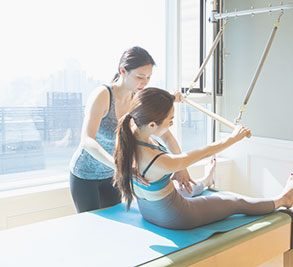

로고
공지사항
안녕하세요. 공지사항입니다. 공지사항입니다.
저렴한 가격 : 트렌디하고 퀄리티 높은 디자인들을 저렴하게 제작 가능합니다. 공지사항입니다.
모바일웹 무료제작 : 홈페이지를 제작했을 뿐인데!! 모바일웹이 무료?!!! 3page 모바일 웹 무료제작.
LTE급 빠른 제작 : 자료준비가 완료되는대로 2~3일 이내에 제작완료!! (오탈자 무료수정, 컨펌불가)
갤러리


◀
▶